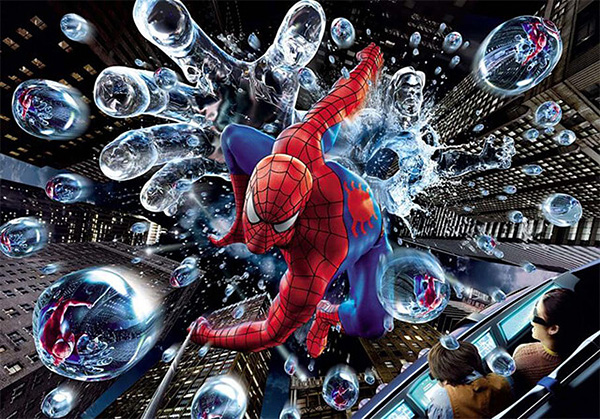
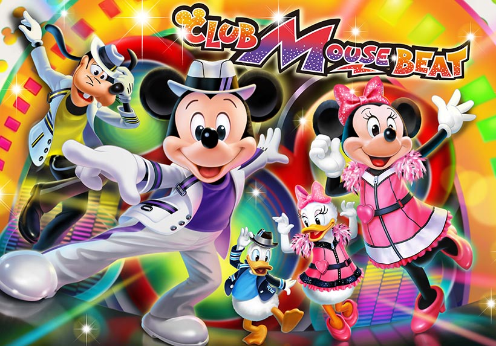

記事一覧
記事タイトル
お知らせです。
by:kame
記事タイトル
お知らせです。
by:kame
テーマパーク リンク先
おすすめです。
-
『ユニバーサル・スタジオ・ジャパンの20周年』 NO LIMIT! ユニバーサル・スタジオ・ジャパンの20周年が、ついに開幕！ テーマは、「NO LIMIT!」。超興奮、超感動体験の連続で、ココロとカラダを解き放ち、超元気になろう！
-
＼ハッピーになれるバルーンモチーフのグッズが登場！／ みなさんは、東京ディズニーリゾートでおなじみのカラフルなバルーンをモチーフにしたグッズが続々と登場しているのを知っていますか？ 明日、6月23日から販売の身につけグッズや雑貨をご紹介します！ ＞＞ https://t.co/E43nN6xWKJ https://t.co/GQ42yE4adq
-
＼ハッピーになれるバルーンモチーフのグッズが登場！／ みなさんは、東京ディズニーリゾートでおなじみのカラフルなバルーンをモチーフにしたグッズが続々と登場しているのを知っていますか？ 明日、6月23日から販売の身につけグッズや雑貨をご紹介します！ ＞＞ https://t.co/E43nN6xWKJ https://t.co/GQ42yE4adq
-
ディズニーランド・リゾートの2大テーマパーク、魔法の王国ディズニーランド・パークと、テーマ性に富んだディズニー・カリフォルニア・アドベンチャー・パークは、人々を楽しませる魔法と興奮に満ちています。
 USJ
USJ最新情報

【ニュース！】
東京ディズニーランドの「ショーベース」で7月2日よりエンターテイメントプログラム「クラブマウスビート」がスタートします。 ディズニーとピクサーの仲間たちによるクールでエキサイティングでユニークなエンターテイメントにどうぞご期待ください。 ＞＞
【みなさんの投票で決まった #ディズニーアンバサダーホテル の夏のドリンクは？】
先日Twitterでみなさんに投票していただいた、この夏にディズニーアンバサダーホテルの「ハイピリオン・ラウンジ」でもう一度飲みたいスペシャルドリンクの結果を発表します！ ＞＞
＼ハッピーになれるバルーンモチーフのグッズが登場！／
みなさんは、東京ディズニーリゾートでおなじみのカラフルなバルーンをモチーフにしたグッズが続々と登場しているのを知っていますか？
明日、6月23日から販売の身につけグッズや雑貨をご紹介します！
＞＞
＼20周年の東京ディズニーシー／
心きらめくときがきた！20周年の東京ディズニーシーは、ワクワクするみんなの気持ちがはじけて光り輝く世界に！ディズニーの仲間たちもキラキラと輝く笑顔で皆さんをお迎えします。さあ、いっしょに輝こう！
＞＞
＼#WE ARE MARIO／
世界中で愛される、あのゲームの世界に入り込んで、マリオのように、体ごと全力で遊ぶ…
ここは、子どもも大人も誰もが、五感のすべてを解放して、本気で遊べる、世界で唯一の遊び場。合言葉は「#WE ARE MARIO」 さあ、アソビの本能を解き放て！＞＞
light